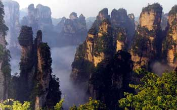

|  |
[后花园]：黄石寨有个前花园，这里有个后花园，传说都是向王天子围猎休闲的场所。这座园门，呈浑圆双拱，就像古时候的那种满月型园门了。加之这数十座石峰，小巧精致，点缀于从林之中；百鸟歌唱，溪涧淙淙，跟古时候大户人家的后花园韵味儿差不多。
|
|
[关于袁家界]：位于杉刀沟北麓,是以石英岩为主的一座巨大而又平缓的山岳.是张家界国家森林公园又一处风景集中地.自金鞭溪紫草潭左入杉刀沟可上袁家界;从金鞭溪千里相会附近处左山坡--乱窜坡也可上袁家界,本次,我们就是从乱窜坡上来的.游罢袁家界,还可以去杨家界、天子山。
|
|